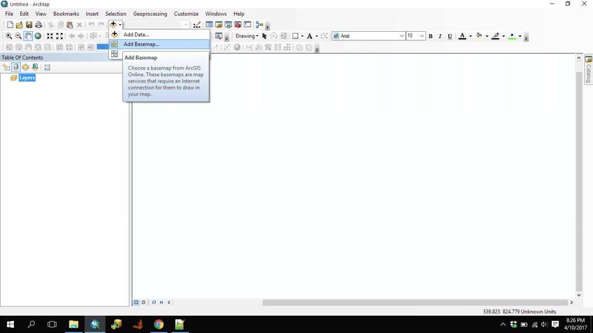
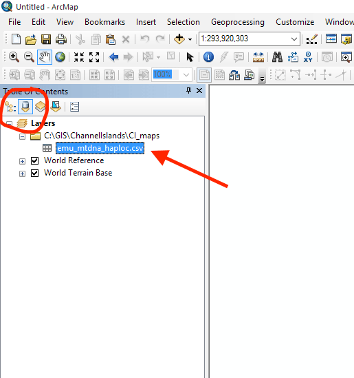
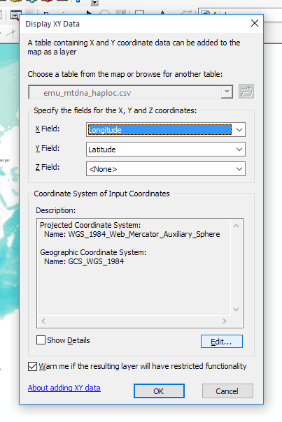
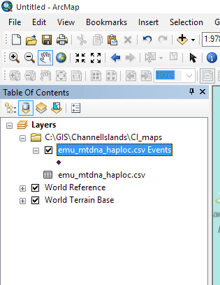

This is a very quick tutorial to walk you through plotting points on a map in ArcMap. The second tutorial in this series will show you how to make it pretty. There are also many fancier things you can do and I encourage you to try them out.
To start, you need a file of point localities. This should be a simple *.csv file (comma-delimited) with a header row and then data, one line per locality. See previous tutorial here.
Open ArcMap, part of the ArcGIS package. You will want to create a blank map so if a window asking you to choose a template pops up, simply click on "cancel."
The first thing to do is to pick a basemap. You may want a topo map, or a simple line map that include state or county boundaries. Perhaps you want satellite images as the background. We will use ArcMap's default basemaps. In the menu bar click on the triangle to the right of + and select "Add basemap" (see below).

A pop-up window will give you a bunch of different options. Choose one, keeping in mind that simple is often best.
The next step is to add your data from the "coordinates file" you created in step 1. Click on the + again and select "Add data". Find the *.csv file you created in step 1.
This file will appear in the Table of contents. In the image below, see the file highlighted in blue. This is the coordinates file I imported in my example. If your file doesn't show, double-check that you have selected the second icon from the left under Table of Contents (List by Source).


The next thing is to edit the coordinate system. Click on Edit... In the pop up window, collapse the windows down so that you see "Geographic Coordinate Systems" and "Projected Coordinate Systems". From here, expand Geographic Coordinate Systems > World and select "WGS1984". Click OK in this window, and OK in the next. You make get a message about projections and object-ids. Just click OK.
Now, the moment of truth. You should see points on a map. If you don't, find the "layer" that was created when you Displayed XY. In your Table of Contents it will look like the bit highlighted in blue below. You can also click on the leftmost icon and see if it shows up there. If it does, right click and select "zoom to layer". Now, you should see your points on a map. Are they in the right places or were they projected incorrectly? If they are not, you will likely need to pick a different coordinate system. Go back to steps 7 and 8. Instead of choosing WGS 1984, try Geographic Coordinate Systems > North America > NAD1983 (or possibly NAD1927, if NAD1983 also projects incorrectly).

Next: Making your map look pretty - adding information and detail for publication.
Back to ArcMap tutorial overview.